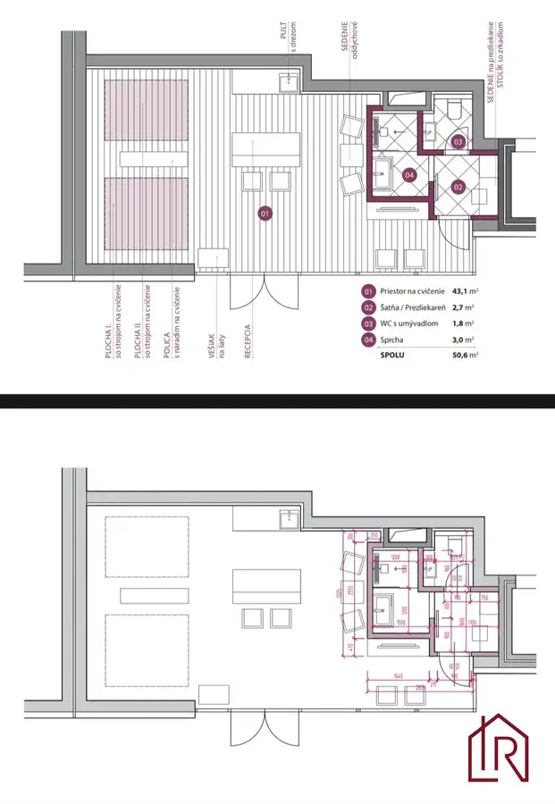
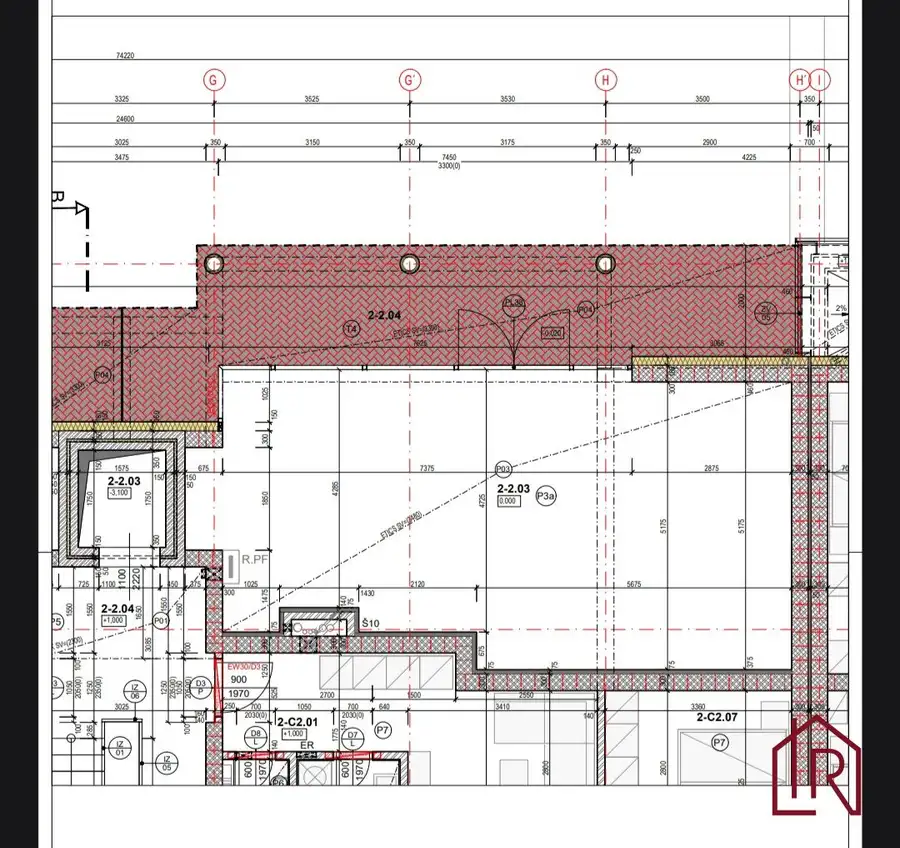
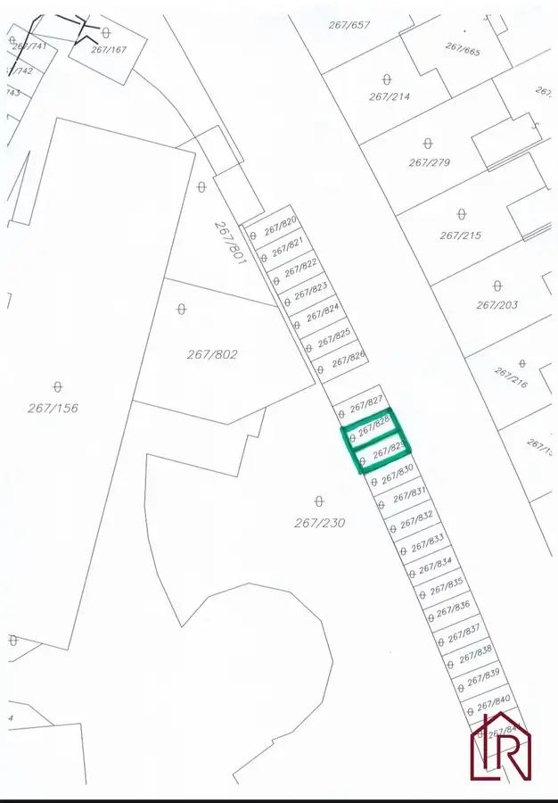
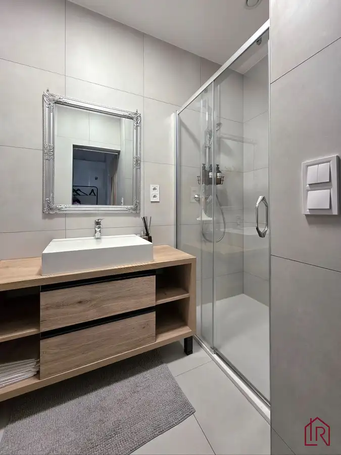
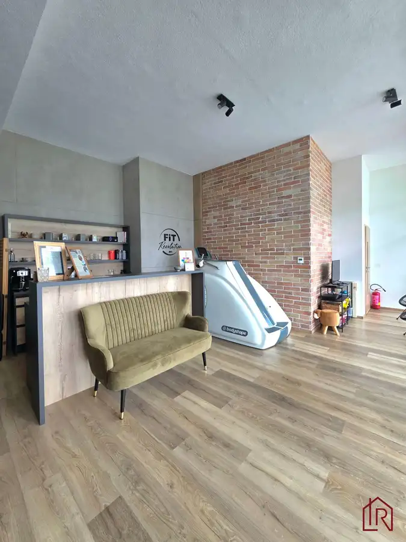

: Investičný priestor, Lorinčík, 4,3 % výnos
mestská časť Lorinčík, Košice






- Plocha52.23 m²
- Poschodie0.
- Stavúplne prerobený
- Vlastníctvoosobné
- Energetická triedaA
O nehnuteľnosti
IMPULZ REAL a Lucia Talianová ponúkajú na predaj investičný komerčný priestor na ulici Pod Hájmi v projekte Lorinčík Háje, Košice – Lorinčík. Priestor s výmerou 52,23 m² a prekrytou terasou 25,93 m² sa predáva kompletne dokončený vrátane dvoch vyhradených parkovacích miest.
Stabilný nájomca zabezpečuje okamžitý hrubý ročný výnos približne 4,3 %. Priestor je možné kúpiť ako investíciu s pokračujúcim nájmom alebo pre vlastné podnikanie po dohode s aktuálnym nájomcom.
TECHNICKÉ PARAMETRE A INFORMÁCIE:
DRUH PRIESTORU: Komerčný priestor
CENA: 150 000€ (vrátane kompletného dokončenia), možnosť dokúpiť 2 vyhradené parkovacie státia, cena za 1 miesto 15 000€
LOKALITA:
Košice – Lorinčík, Pod Hájmi
INTERIÉR: 52,23 m²
TERASA: 25,93 m² (prekrytá)
CELKOVÁ PLOCHA: 78,16 m²
STAV: Kompletné dokončenie
KONŠTRUKCIA: Tehla
ZATEPLENIE: Minerálna vlna
STROP: Dodatočne zateplený 10 cm minerálnou vlnou
SVETLÁ VÝŠKA STROPOV: 3,40 m
PARKOVANIE: 2 vyhradené parkovacie miesta s dopravným značením schváleným mestom Košice
VLASTNÍCTVO: Osobné
ENERGETICKÝ CERTIFIKÁT: A1
DISPOZÍCIA PRIESTORU
Priestor je riešený prakticky a ponúka dostatok súkromia pre klientov aj komfortné zázemie pre podnikanie.
Centrálna hlavná miestnosť s nadštandardnou svetlou výškou 3,40 m.
Prekrytá terasa s výmerou 25,93 m², ktorá rozširuje možnosti využitia priestoru.
Samostatná toaleta.
Samostatná kúpeľňa so sprchovacím kútom a umývadlom.
Dispozícia je vhodná pre služby, poradenstvo, zdravotnícke prevádzky aj administratívu.
STAV PRIESTORU:
Priestor bol dokončený z holopriestoru do kvalitného štandardu a je pripravený na okamžité využívanie.
Tehlová stavba.
Obvodové murivo zateplené minerálnou vlnou.
Strop dodatočne zateplený 10 cm minerálnou vlnou.
Nadštandardná svetlá výška stropov 3,40 m.
Kvalitné podlahy.
Veľké presklené plochy zabezpečujú dostatok denného svetla.
Prekrytá terasa vhodná na celoročné využitie.
INVESTIČNÝ POTENCIÁL:
Priestor predstavuje zaujímavú investičnú príležitosť s okamžitým výnosom.
Stabilný nájomca pôsobí v priestore dlhodobo a má záujem pokračovať v nájomnom vzťahu.
Okamžitý hrubý ročný výnos približne 4,3 %.
Predaj je možný aj bez nájomcu.
Aktuálny nájomca využíva iba jedno z dvoch parkovacích miest.
Druhé parkovacie miesto je možné samostatne prenajímať za približne 30 až 50€ mesačne, čím je možné zvýšiť celkový výnos z investície.
Priestor sa predáva bez zariadenia a vybavenia fitness centra, konkrétne cvičebných strojov a ostatného vybavenia súvisiaceho s prevádzkou fitness centra.
MOŽNOSTI VYUŽITIA:
Vďaka dispozícii, výške stropov a polohe v modernej rezidenčnej štvrti je priestor vhodný pre rôzne druhy podnikania.
- kancelária, administratíva, poradenské služby, kozmetický salón, kaderníctvo, barber, fyzioterapia, masáže, rehabilitácie, pohybové alebo fitness štúdio, showroom, zdravotnícke služby,ďalšie prevádzky občianskej vybavenosti.
LOKALITA:
Projekt Lorinčík Háje patrí medzi najmodernejšie rezidenčné štvrte v Košiciach. Postupne tu vznikla stabilná komunita obyvateľov, ktorá prirodzene vytvára dopyt po službách priamo v mieste bývania. Aktuálny nájomca je toho najlepším dôkazom – v priestore úspešne pôsobí a má záujem pokračovať v nájomnom vzťahu.
NÁZOR MAKLÉRA:
Takéto ponuky sa na trhu objavujú len zriedka. Komerčný priestor sa nachádza v kvalitnom developerskom projekte, ktorý je už plne obývaný a vytvoril si vlastnú komunitu obyvateľov. To je pri investičných nehnuteľnostiach jeden z najdôležitejších faktorov úspechu.
Najväčšou výhodou tejto ponuky je, že nový vlastník kupuje priestor, ktorý už dnes generuje príjem. Stabilný nájomca prináša okamžitý výnos približne 4,3 % ročne, pričom ďalší potenciál predstavuje druhé parkovacie miesto, ktoré je možné samostatne prenajímať. Kupujúci tak získava nehnuteľnosť s perspektívou rastu výnosu bez potreby ďalších investícií.
Ak hľadáte reprezentatívny komerčný priestor pre vlastné podnikanie, výhodou je aj možnosť odkúpenia bez pokračovania nájomného vzťahu. Vďaka kvalitnému prevedeniu, nadštandardnej výške stropov, prekrytej terase a výbornej lokalite ide o nehnuteľnosť, ktorá ponúka široké možnosti využitia aj do budúcnosti.
KONTAKT:
Pre bližšie informácie kontaktujte kedykoľvek certifikovaného rodinného realitného makléra: Lucia Talianová, , (certifikovaný maklér NARKS - Národná asociácia realitných kancelárií Slovenska).
Viac ako nehnuteľnosť. DOMOV
V Impulz Real zabezpečujeme kompletný servis pri kúpe aj predaji nehnuteľností – od právneho servisu, cez financovanie až po bezpečné odovzdanie nehnuteľnosti.
IMPULZ REAL – Vaša rodinná realitná kancelária, ktorej dôverujete.
Parametre
- Celková rozloha
- 78.16 m²
- Úžitková plocha
- 52.23 m²
- Poschodie
- prízemie
- Vlastníctvo
- osobné
- Stav
- úplne prerobený
- Status
- aktívne
- Odvoz odpadu
- áno
- Plyn
- nie
- Internet
- optika
- Kúpeľňa
- sprchovací kút
- Vykurovanie
- spoločné – vlastná kotolňa
- Terasa
- áno - 1
- Pivnica
- nie
- Garáž
- nie
- Parkovanie
- vlastné vyhradené
- Postavené z
- tehla
- Zariadenie
- čiastočne
- Zateplený objekt
- áno
- Energetický certifikát
- A
- Predzáhradka
- nie
- Bezbariérový prístup
- áno
- Novostavba
- áno
- Dátum zverejnenia
- 2026-06-29
Kde to je
Mohlo by Vás zaujímať
 ZáhradyNové
75 000 €: Záhrada s chatkou, Košice – Krásna, 716 m², elektrina
mestská časť Krásna, Košice
716 m²
ZáhradyNové
75 000 €: Záhrada s chatkou, Košice – Krásna, 716 m², elektrina
mestská časť Krásna, Košice
716 m²
 Rodinné domyNové
245 000 €Rezervované, Celoročné bývanie pri Košiciach, pozemok 901 m2
Okolie
4-izbový150 m²
Rodinné domyNové
245 000 €Rezervované, Celoročné bývanie pri Košiciach, pozemok 901 m2
Okolie
4-izbový150 m²
 BytNové
249 900 €4 - izbový byt, Košice Terasa, Bernolákova, 82 m²
Západ, Košice
4-izbový78 m²3. podlažie
BytNové
249 900 €4 - izbový byt, Košice Terasa, Bernolákova, 82 m²
Západ, Košice
4-izbový78 m²3. podlažie